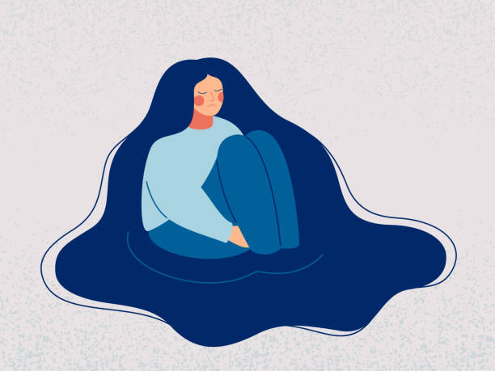

The Silent Killer
Depression isn’t loud. It’s a silent presence that lingers in the back of your mind. Even in moments of happiness, it whispers, slowly taking more of your energy, time, and ability to enjoy life.
How It Grows
At first, it feels like a quiet voice. But over time, it grows louder and harder to ignore. It demands your focus until the things you once loved start to feel distant and unreachable.


You Are Not Alone
Depression is heavy, but it is not unbeatable. Support, awareness, and treatment can help lift the weight. No one should face it in silence.